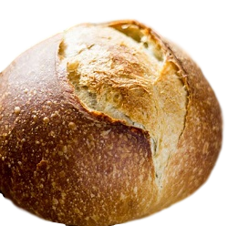

Fresh from the Oven
Sourdough
 Sourdough is slow-fermented bread. It’s unique because it’s made with a live fermented culture, a sourdough starter, which acts as a natural leavening agent. Our Sourdough is known for its characteristic tangy flavor, chewy texture and crisp, crackly crust. From a health standpoint, it dominates when compared to supermarket loaves. The naturally occurring acids and long fermentation help to break down the gluten, making it more digestible and easy for the body to absorb. It tastes darn good!
Learn more about our baking process...
Muffins
We offer great variety of delightfully moist and fluffy muffins, perfect for your mid day snack. Our best sellers are banana walnut and double choc. We put big chunks of banana and whole walnuts in our banana walnut muffin. Our double choc muffin is filled with chocolatey goodness of a generous amount of melted choc chip! We made our muffin from scratch each day. You will love them!